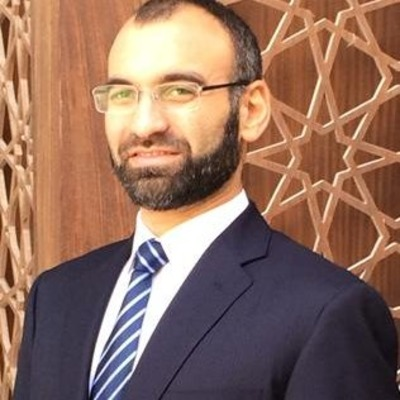

Hussein Said

Summary
I am a professional business consultant and now aspiring
to become a professional fullstack developer
Education
- MBA INSEAD, 2010
- PhD University of Cambridge, 2006
- Beng King's college London, 2000
Work experience
Senior strategy consultant, IBM
Nov 2017 - present
- develop digital transformation roadmaps
- execute change management for digital transformation
- Business analysis and process re-engineering
Senior director, Logic consulting
Jan 2016 - Nov 2017
- organization design projects
- financial modeling and go to market strategy
- development strategy projects for the government
-
transformation consultant, Philips healthcare
June 2013 - Dec 2015
- strategic initiative across philips geographies
- operational improvement projects of hospitals
- investment strategy for hospital programs
-
Senior consultant, McKinsey&Co.
Jan 2011 - June 2013
- strategy roadmap projects
- procurement optimization projects
- operational transformation projects
Skills
- Strategy formulation : ⭐️⭐️⭐️⭐️⭐️
- Change managment: ⭐️⭐️⭐️⭐️⭐️'
- Product ownership: ⭐️⭐️⭐️⭐️⭐️
- Enterprise architecture: ⭐️⭐️⭐️⭐️⭐️
- Business Analysis: ⭐️⭐️⭐️⭐️⭐️
Awards and certifications
- Certified scrum master CSM
- certified scrum product owner CSPO
- Togaf 9.2 certified Enterprise architect
other